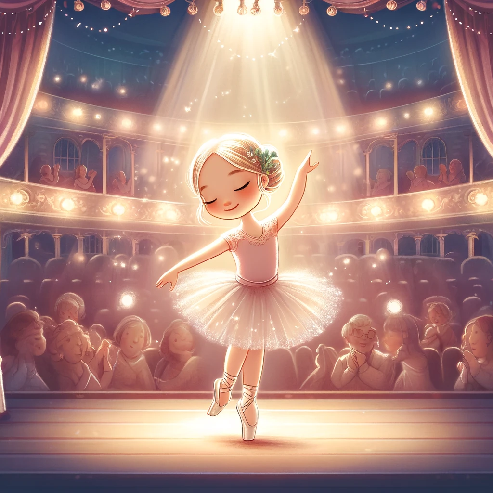

Clara y el Sueño del Ballet

Había una vez, en una pequeña ciudad rodeada de montañas, una niña llamada Clara. Clara soñaba con ser una bailarina desde que era muy pequeña. Cada vez que escuchaba música, no podía evitar moverse al ritmo, girando y saltando con gracia.
Un día, Clara recibió una invitación especial para asistir a la prestigiosa Academia de Ballet de la ciudad. Estaba emocionada y un poco nerviosa, pero su amor por el baile la hizo aceptar con entusiasmo. En la academia, Clara conoció a muchas otras niñas y niños que compartían su pasión por el ballet.
Clara se esforzaba mucho en cada clase, practicando todos los días hasta que sus pies casi no podían más. Aunque a veces se sentía cansada y quería rendirse, recordaba su sueño de ser una gran bailarina y seguía adelante con determinación.
Un día, el director de la academia anunció que habría una gran presentación de fin de año, y Clara fue elegida para ser la protagonista del espectáculo. Estaba muy feliz, pero también sabía que tendría que trabajar más duro que nunca.
Durante los siguientes meses, Clara practicó sin descanso. Aprendió nuevos pasos y perfeccionó sus movimientos, siempre con una sonrisa en el rostro. Sus compañeros la apoyaban y juntos formaron un equipo increíble.
Finalmente, llegó el día de la gran presentación. El teatro estaba lleno de personas esperando ansiosas para ver el espectáculo. Cuando las luces se apagaron y la música comenzó a sonar, Clara sintió que todos sus esfuerzos habían valido la pena. Con gracia y elegancia, bailó en el escenario, moviéndose como si fuera parte de la música misma.
El público quedó maravillado con su actuación y al final, todos se pusieron de pie para aplaudir. Clara sintió una inmensa felicidad y gratitud. Había logrado su sueño y sabía que todo era posible con esfuerzo y pasión.
Desde ese día, Clara continuó bailando y creciendo como bailarina, siempre recordando que los sueños se hacen realidad cuando se trabaja con amor y dedicación.
Y colorín colorado, este cuento se ha acabado. Buenas noches, Londra. ¡Dulces sueños!